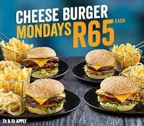
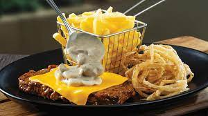
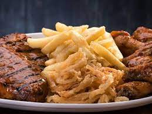
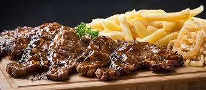
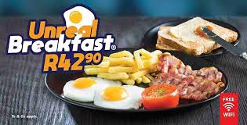

SPUR
Spur Corporation (doing business as Spur Steak Ranches) (JSE: SUR) is a steakhouse franchise restaurant chain originating from South Africa with a focus on family dining. The head office of Spur Corporation is situated in Century City, Cape Town. Although the founding and flagship brand is the Spur steakhouse restaurants, the company owns a number of other, predominantly South African, restaurant brands. Spur Steak Ranches is a themed South African family favourite and is fondly known as "the official restaurant of the South African family"; as such, most Spur restaurants include a children's play area.
In 1967 founder and executive chairman, Allen Ambor, opened the Golden Spur on Dean Street in Newlands, Cape Town in South Africa. Ambor started the first restaurant with R2000 of his own money, R4000 from his father and an additional R5000 from a partner who was eventually bought out; amounting to a total starting capital of R11,000.[2] The restaurant was opened on the 24 October 1967.[2] The original restaurant moved to a new location at the corner of Dean and Main Road in the 2000s and closed in 2020
The Spur Group consists of Spur International, Spur Steak Ranches, Panarottis Pizza Pasta, John Dory’s Fish Grill Sushi, The Hussar Grill, RocoMamas, Spur Grill & Go and Casa Bella. It currently has 569 outlets worldwide, with restaurants in various parts of Africa, Mauritius, the Middle East and Australasia. In March 2018, Spur Corporation sold Captain Dorego.
    